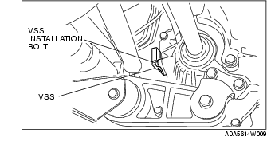

Vehicle speed sensor (VSS) removal/installation [FN4A-EL]
- • Water or foreign objects entering the connector can cause a poor connection or corrosion. Be sure not to drop water or foreign objects on the connector when disconnecting it.
- • If foreign materials are stuck to the VSS, disturbance by magnetic flux can cause sensor output to be abnormal and thereby negatively affect control. Make sure that foreign materials such as iron filings are not stuck to the VSS during installation.
1. Disconnect the negative battery cable.
2. Disconnect the VSS connector.
3. Remove the VSS.

4. Apply ATF to a new O-ring and install it on the VSS.
5. Install the VSS.

Tightening torque
6. Connect the VSS connector.
7. Connect the negative battery cable.